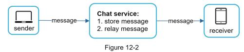
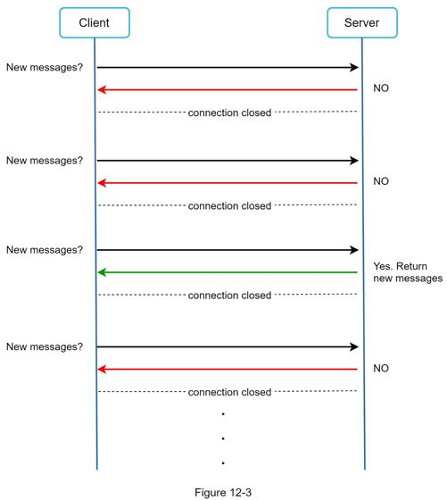
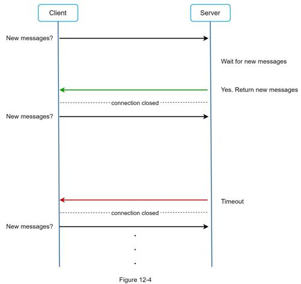
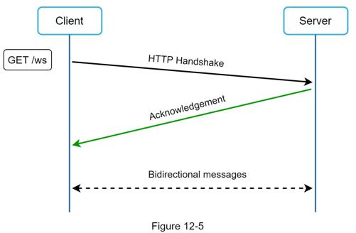
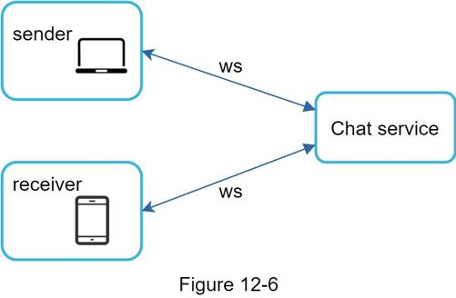
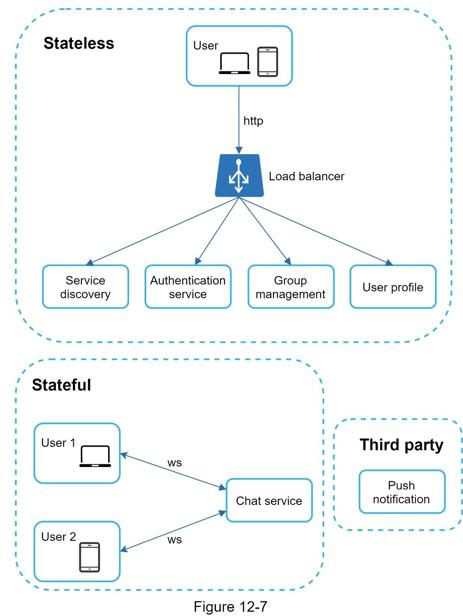
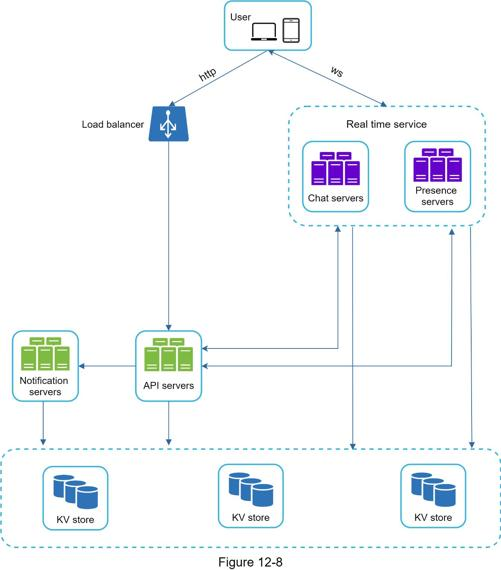
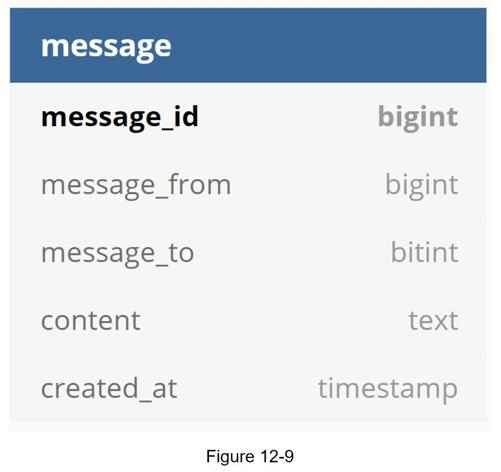
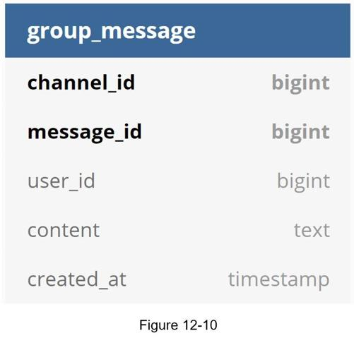

To develop a high-quality design, we should have a basic knowledge of how clients and servers communicate. In a chat system, clients can be either mobile applications or web applications. Clients do not communicate directly with each other. Instead, each client connects to a chat service, which supports all the features mentioned above. Let us focus on fundamental operations. The chat service must support the following functions:
•Receive messages from other clients.
•Find the right recipients for each message and relay the message to the recipients.
•If a recipient is not online, hold the messages for that recipient on the server until she is online.
Figure 12-2 shows the relationships between clients (sender and receiver) and the chat service.

When a client intends to start a chat, it connects the chats service using one or more network protocols. For a chat service, the choice of network protocols is important. Let us discuss this with the interviewer.
Requests are initiated by the client for most client/server applications. This is also true for the sender side of a chat application. In Figure 12-2, when the sender sends a message to the receiver via the chat service, it uses the time-tested HTTP protocol, which is the most common web protocol. In this scenario, the client opens a HTTP connection with the chat service and sends the message, informing the service to send the message to the receiver. The keep-alive is efficient for this because the keep-alive header allows a client to maintain a persistent connection with the chat service. It also reduces the number of TCP handshakes. HTTP is a fine option on the sender side, and many popular chat applications such as Facebook [1] used HTTP initially to send messages.
However, the receiver side is a bit more complicated. Since HTTP is client-initiated, it is not trivial to send messages from the server. Over the years, many techniques are used to simulate a server-initiated connection: polling, long polling, and WebSocket. Those are important techniques widely used in system design interviews so let us examine each of them.
As shown in Figure 12-3, polling is a technique that the client periodically asks the server if there are messages available. Depending on polling frequency, polling could be costly. It could consume precious server resources to answer a question that offers no as an answer most of the time.

Because polling could be inefficient, the next progression is long polling (Figure 12-4).

In long polling, a client holds the connection open until there are actually new messages available or a timeout threshold has been reached. Once the client receives new messages, it immediately sends another request to the server, restarting the process. Long polling has a few drawbacks:
•Sender and receiver may not connect to the same chat server. HTTP based servers are usually stateless. If you use round robin for load balancing, the server that receives the message might not have a long-polling connection with the client who receives the message.
•A server has no good way to tell if a client is disconnected.
•It is inefficient. If a user does not chat much, long polling still makes periodic connections after timeouts.
WebSocket is the most common solution for sending asynchronous updates from server to client. Figure 12-5 shows how it works.

WebSocket connection is initiated by the client. It is bi-directional and persistent. It starts its life as a HTTP connection and could be “upgraded” via some well-defined handshake to a WebSocket connection. Through this persistent connection, a server could send updates to a client. WebSocket connections generally work even if a firewall is in place. This is because they use port 80 or 443 which are also used by HTTP/HTTPS connections.
Earlier we said that on the sender side HTTP is a fine protocol to use, but since WebSocket is bidirectional, there is no strong technical reason not to use it also for receiving. Figure 12-6 shows how WebSockets (ws) is used for both sender and receiver sides.

By using WebSocket for both sending and receiving, it simplifies the design and makes implementation on both client and server more straightforward. Since WebSocket connections are persistent, efficient connection management is critical on the server-side.
Just now we mentioned that WebSocket was chosen as the main communication protocol between the client and server for its bidirectional communication, it is important to note that everything else does not have to be WebSocket. In fact, most features (sign up, login, user profile, etc) of a chat application could use the traditional request/response method over HTTP. Let us drill in a bit and look at the high-level components of the system.
As shown in Figure 12-7, the chat system is broken down into three major categories: stateless services, stateful services, and third-party integration.

Stateless services are traditional public-facing request/response services, used to manage the login, signup, user profile, etc. These are common features among many websites and apps.
Stateless services sit behind a load balancer whose job is to route requests to the correct services based on the request paths. These services can be monolithic or individual microservices. We do not need to build many of these stateless services by ourselves as there are services in the market that can be integrated easily. The one service that we will discuss more in deep dive is the service discovery. Its primary job is to give the client a list of DNS host names of chat servers that the client could connect to.
The only stateful service is the chat service. The service is stateful because each client maintains a persistent network connection to a chat server. In this service, a client normally does not switch to another chat server as long as the server is still available. The service discovery coordinates closely with the chat service to avoid server overloading. We will go into detail in deep dive.
For a chat app, push notification is the most important third-party integration. It is a way to inform users when new messages have arrived, even when the app is not running. Proper integration of push notification is crucial. Refer to Chapter 10 Design a notification system for more information.
On a small scale, all services listed above could fit in one server. Even at the scale we design for, it is in theory possible to fit all user connections in one modern cloud server. The number of concurrent connections that a server can handle will most likely be the limiting factor. In our scenario, at 1M concurrent users, assuming each user connection needs 10K of memory on the server (this is a very rough figure and very dependent on the language choice), it only needs about 10GB of memory to hold all the connections on one box.
If we propose a design where everything fits in one server, this may raise a big red flag in the interviewer’s mind. No technologist would design such a scale in a single server. Single server design is a deal breaker due to many factors. The single point of failure is the biggest among them.
However, it is perfectly fine to start with a single server design. Just make sure the interviewer knows this is a starting point. Putting everything we mentioned together, Figure 12-8 shows the adjusted high-level design.

In Figure 12-8, the client maintains a persistent WebSocket connection to a chat server for real-time messaging.
•Chat servers facilitate message sending/receiving.
•Presence servers manage online/offline status.
•API servers handle everything including user login, signup, change profile, etc.
•Notification servers send push notifications.
•Finally, the key-value store is used to store chat history. When an offline user comes online, she will see all her previous chat history.
At this point, we have servers ready, services up running and third-party integrations complete. Deep down the technical stack is the data layer. Data layer usually requires some effort to get it correct. An important decision we must make is to decide on the right type of database to use: relational databases or NoSQL databases? To make an informed decision, we will examine the data types and read/write patterns.
Two types of data exist in a typical chat system. The first is generic data, such as user profile, setting, user friends list. These data are stored in robust and reliable relational databases. Replication and sharding are common techniques to satisfy availability and scalability requirements.
The second is unique to chat systems: chat history data. It is important to understand the read/write pattern.
•The amount of data is enormous for chat systems. A previous study [2] reveals that Facebook messenger and Whatsapp process 60 billion messages a day.
•Only recent chats are accessed frequently. Users do not usually look up for old chats.
•Although very recent chat history is viewed in most cases, users might use features that require random access of data, such as search, view your mentions, jump to specific messages, etc. These cases should be supported by the data access layer.
•The read to write ratio is about 1:1 for 1 on 1 chat apps.
Selecting the correct storage system that supports all of our use cases is crucial. We recommend key-value stores for the following reasons:
•Key-value stores allow easy horizontal scaling.
•Key-value stores provide very low latency to access data.
•Relational databases do not handle long tail [3] of data well. When the indexes grow large, random access is expensive.
•Key-value stores are adopted by other proven reliable chat applications. For example, both Facebook messenger and Discord use key-value stores. Facebook messenger uses HBase [4], and Discord uses Cassandra [5].
Just now, we talked about using key-value stores as our storage layer. The most important data is message data. Let us take a close look.
Figure 12-9 shows the message table for 1 on 1 chat. The primary key is message_id, which helps to decide message sequence. We cannot rely on created_at to decide the message sequence because two messages can be created at the same time.

Figure 12-10 shows the message table for group chat. The composite primary key is (channel_id, message_id). Channel and group represent the same meaning here. channel_id is the partition key because all queries in a group chat operate in a channel.

How to generate message_id is an interesting topic worth exploring. Message_id carries the responsibility of ensuring the order of messages. To ascertain the order of messages, message_id must satisfy the following two requirements:
•IDs must be unique.
•IDs should be sortable by time, meaning new rows have higher IDs than old ones.
How can we achieve those two guarantees? The first idea that comes to mind is the “auto_increment” keyword in MySql. However, NoSQL databases usually do not provide such a feature.
The second approach is to use a global 64-bit sequence number generator like Snowflake [6]. This is discussed in “Chapter 7: Design a unique ID generator in a distributed system”.
The final approach is to use local sequence number generator. Local means IDs are only unique within a group. The reason why local IDs work is that maintaining message sequence within one-on-one channel or a group channel is sufficient. This approach is easier to implement in comparison to the global ID implementation.